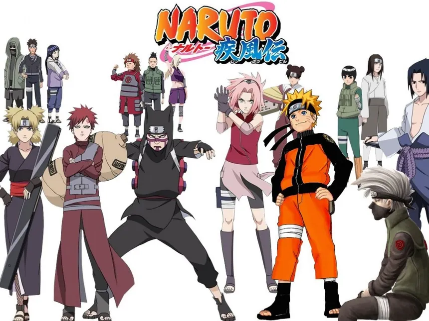
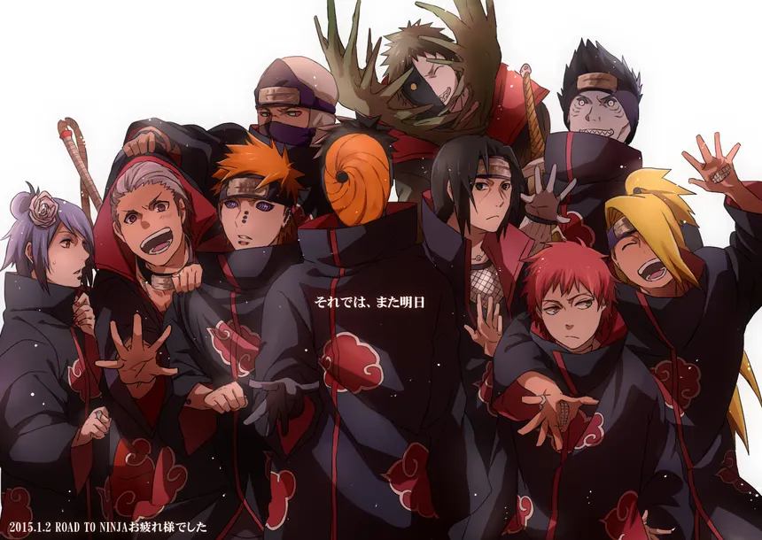
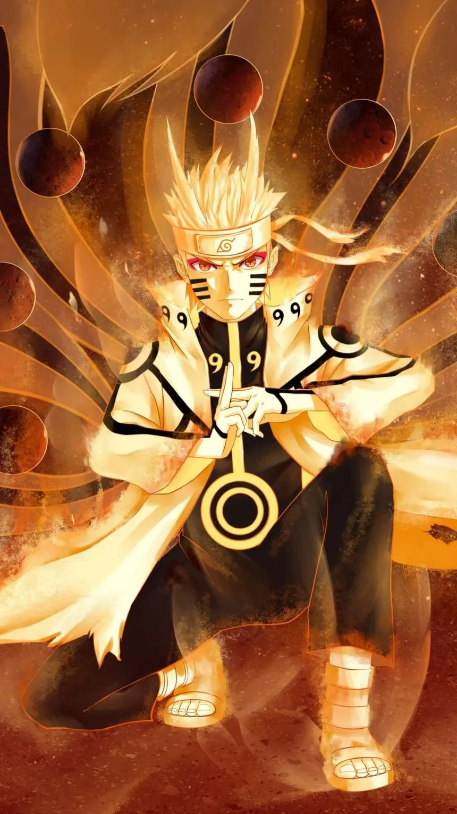

📖 Story Summary
>
Naruto lives in the Hidden Leaf Village (Konoha). A powerful beast, the Nine-Tailed Fox, was sealed inside him at birth. Because of this, villagers fear and avoid him.
Through training, friendship, and determination, Naruto grows stronger and aims to:
Protect his village
Save his friends
End the cycle of hatred



⚔️ Major Arcs
>
🔹 Naruto (Part 1)
1️⃣ Land of Waves Arc
2️⃣ Chunin Exams Arc ⭐
3️⃣ Konoha Crush Arc
4️⃣ Search for Tsunade
5️⃣ Sasuke Retrieval Arc
🔹 Naruto Shippuden
6️⃣ Kazekage Rescue
7️⃣ Akatsuki Suppression
8️⃣ Pain’s Assault ⭐
9️⃣ Five Kage Summit
🔟 Fourth Great Ninja War ⭐⭐⭐